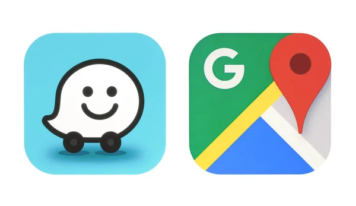

GOOGLE

Google LLC is an American multinational technology company that focuses on artificial intelligence, search engine,
online advertising, cloud computing, computer software, quantum computing, e-commerce, and consumer electronics.
Wikipedia
CEO: Sundar Pichai (2 Oct 2015–) Trending
Founded: 4 September 1998, Menlo Park, California, United States
Headquarters: Mountain View, California, United States
Subsidiaries: YouTube, Dialogflow, Kaggle, Google AdMob, Looker, MORE
Founders: Larry Page, Sergey Brin
Parent organization: Alphabet Inc.
click me to go to googlepage
TOPIC: CURRENT FROM HASSAN SEIKH MOHAMUD
President of Somalia
Hassan Sheikh Mohamud (pictured) is elected as President of Somalia.
In the United States, ten people are killed in a mass shooting ata supermarket in Buffalo, New York.
Ukraine, represented by Kalush Orchestra with the song "Stefania",wins the Eurovision Song Contest.
Mohamed bin Zayed Al Nahyan inherits the Emirate of Abu Dhabi andbecomes President of the United Arab Emirates after the death ofKhalifa bin Zayed Al Nahyan.
Ongoing: COVID-19 pandemicRussian invasion of Ukraine
Recent deaths: Sidney KramerRoger AngellKlara HöfelsVangelisUriSavirPeter Nicholas
TO visit Sheikh mohammad click me
THIS IS A LIITLE ENQUERY ON GOOGLE
THANKYOU FOR YOUR TIME
SUNDER PICHAI
 click for more on
pichai
click for more on
pichai


Born June 10, 1972 (age 49)
Madurai, Tamil Nadu, India
Citizenship United States[1]
Education IIT Kharagpur (BTech)
Stanford University (MS)
University of Pennsylvania (MBA)
Title CEO of Alphabet and Google
Board member of
Alphabet Inc.[2]
Magic Leap (2014–2018)[3]
Spouse(s) Anjali Pichai
Children 2
Awards IND Padma Bhushan BAR.png Padma Bhushan
Signature
Sundarpichaisignature.svg
7 Companies Owned by Google (Alphabet)
1. Mandiant
Business type: Cybersecurity
Acquisition price: $5.4 billion
Acquisition date (announced—not yet closed): March 8, 20226
Google announced its intent to purchase publicly-traded cybersecurity firm Mandiant, Inc. (MNDT) on March 8, 2022, for
$23 per share—roughly $5.4 billion. The company, which focuses on cybersecurity testing and cyber-incident response,
will be folded into Google’s cloud computing business to help better secure cloud data.6
Mandiant was purchased by FireEye in 2013 for roughly $1 billion.7 In June 2021, FireEye sold its FireEye branded
products business and name to the private equity firm Symphony Technology Group for $1.2 billion—leaving the Mandiant
Solutions software business in the publicly-traded company.8 In October 2021, the company changed its name back to
Mandiant.
2. Fitbit

Business type: Wearable fitness devices and app
Acquisition price: $2.1 billion13
Acquisition date: Jan. 14, 202114
Fitbit was founded in 2007 by James Park and Eric Friedman, whose goal was to create a wearable product that leveraged
wireless technology to enhance users' health and fitness. The company's products include smartwatches, armband fitness
trackers, a digital fitness tracking application, and related gear, accessories, and services.15
Google closed the Fitbit buyout in January 2021 after the deal was first announced in November 2019, adding to its
wearable-device lineup following its acquisition of the Timex smartwatch technology in 2019.13
The deal closed after antitrust regulators in the European Union approved the acquisition with conditions directed at
protecting users' health data and preserving competition in the sector for wearable tech. Google stressed that the
acquisition is about devices, rather than data, and made commitments that user data would not be used for Google ads.14
3. Looker
Business type: Business intelligence software and data analytics
Acquisition price: $2.6 billion16
Acquisition date: February 13, 202017
Looker, founded in 2011 by Lloyd Tabb, helps companies to easily extract and analyze data. Most legacy business
intelligence systems at the time required users to have engineering and programming expertise in order to extract data
and analyze it. Looker simplified the process by taking programming queries and modifying them to read more like natural
languages, such as English. This allowed users to perform data analytics without having to "speak" code.18
Google announced its planned buyout of Looker in June 2019. Google finalized its acquisition of Looker in 2020,
leveraging its capabilities through the Google Cloud service. At Google Cloud, Looker helps customers accelerate their
ability to analyze data, deliver business intelligence, and build data-driven applications.19
4. Nest
Business type: Smart-home products
Acquisition price: $3.2 billion
Acquisition date: Jan. 13, 201420
Nest Labs was founded in 2010 by Tony Fadell and Matt Rogers. Both Fadell and Rogers left their positions at Apple's
iPod and iPhone development division to start a technology company aimed at revolutionizing the thermostat: to transform
it into a sensor-driven, Wifi-enabled, learning, and programmable device.21
In 2014, Google acquired Nest and has since merged it with Google's Home division to create Google Nest, which offers a
range of smart home products, including security alarm systems, security cameras, Wifi routers, and home assistance
devices
5. Waze

Business type: Mobile navigation app
Acquisition price: $966 million23
Acquisition date: June 11, 201324
Waze was founded in Israel in 2008. The crowd-sourced mobile traffic advisory device and navigation service was acquired
five years later by Google, whose own Google Maps app was already seven years old by that time.2425 Acquiring Waze was
one way to eliminate competition, but Google also saw Waze's traffic-updating features as novel enhancements to Google
Maps.
Google has since been able to monetize the service by selling ad services to businesses, including ads that alert
drivers when they are near participating businesses.26 Waze had over 140 million monthly active users in early 2021—up
from 10 million when it was acquired.
6. DoubleClick

Business type: Ad management and ad serving solutions
Acquisition price: $3.1 billion28
Acquisition date: March 11, 200829
DoubleClick was founded in 1996 and became one of the stock-market stars of the dot-com era as a leader in the first
generation of online advertising during the 1990s. Private equity firm Hellman & Friedman paid $1.1 billion in a
"take-private" transaction to become majority owners of the company in 2005.30
Google then acquired DoubleClick in 2008 as a way to bolster the analysis and ad-targeting capabilities of its
customers. In 2018, Google retired the DoubleClick brand name and folded it into Google's AdWords brand, making Google
Ads the central tool for advertisers.
7. YouTube

Business type: Online video-sharing platform
Acquisition price: $1.65 billion
Acquisition date: November 13, 200631
YouTube ad revenue (2019): $15.1 billion32
YouTube was founded in 2005 by three former PayPal employees who believed that ordinary peopled would enjoy sharing
their homemade videos online. By the summer of 2006, YouTube was already offering more than 100 million videos per day.
Both technical problems that accompany rapid growth and lack of commercial success prompted YouTube to begin searching
for a buyer.
Meanwhile, Google's own video platform, Google Video, which was also launched in 2005, had failed to generate much
traffic.33 Google's acquisition of YouTube in late 2006 gave it a new, powerful video platform. YouTube has grown into a
significant source of Alphabet's ad revenue, while also generating revenue through premium and YouTube TV subscriptions.
In 2021, YouTube's ad revenue was $28.9 billion.
c + o2→ co2
c + o2← co2
c + o2↑ co2
c + o2↓ co2
c + o2↔ co2